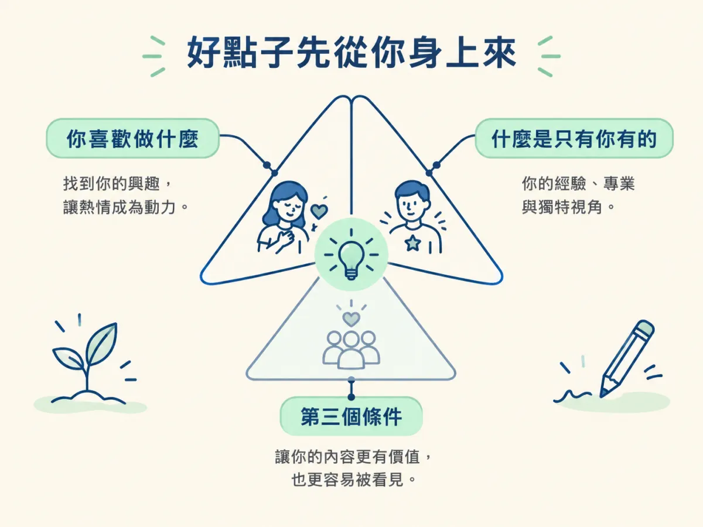
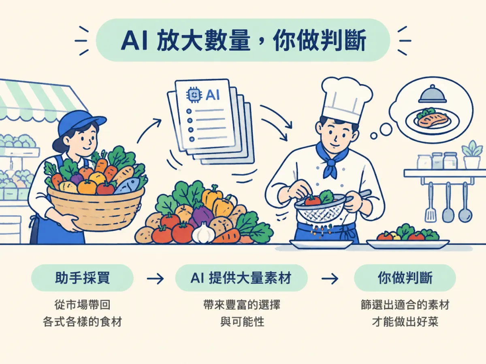

你打開 Claude，輸入「幫我想十個 AI 影片題目」，十秒後清單就出來了。每個標題都挺順，看起來也都像一回事。可是你讀到第四個就停下來，因為你對它們一點感覺都沒有：你沒做過、沒想講、也不知道第一句該從哪裡開口。
這種情況很常見。問題通常不是點子不夠多，而是這些點子跟你沒有關係。你講一個跟自己無關的題目，講到第三句就會空，觀眾也聽得出來。
這一節要先把一件事講清楚：發想的起點是你自己。AI 能幫你把數量拉起來，但它沒辦法替你決定哪一個值得你花一個下午去錄。知道這個分工，之後面對 /latest 給你的一大串清單，你才不會被數量淹沒。
理解最好的點子來自你自己的經驗與專業，知道 AI 在發想裡負責放大數量，而判斷仍然要由你來做。
課程談 idea sources 時，一開頭就先提醒這件事：很多最好的內容點子，是示範的人沒有靠任何 AI agent、隨口在腦中冒出來的。這不是客套話。你在生活與工作裡踩過的坑、看過的案例、對某件事的不耐煩，都是別人拿不到的素材。
課程用「內容三角（Content Trifecta）」來說明好內容的基礎。三角裡有三個條件，這一節先用其中兩個：一是你喜歡做什麼，二是什麼是只有你有的。你要先想清楚這兩件事，點子才會有根。課程接著說，很多好點子就是從這兩個角交會的地方長出來的，而且常常來自你的經驗與專業。

舉個假設的例子。有一個人喜歡修老舊的電腦，白天又在公司負責資訊安全。他能講的「怎麼用 AI 檢查一台舊系統的漏洞」，別人很難模仿，因為那是他在工作裡一次一次踩出來的經驗。這樣的題目不用 AI 也想得出來，AI 之後才負責幫他把相關的最新消息找齊。
課程的邏輯很清楚：內容策略要追求數量（volume），數量需要大量的點子。一個人自己想，能想到的很有限。AI 與自動化工具能掃過很多來源，一次給你一整批，這正是它的強項。
你可以把這個分工想成一間餐廳。廚師決定這一餐要做什麼風格的菜，助手負責去市場採買、挑出一堆可用的食材。如果助手買回來的全是你不會煮、也不想煮的東西，食材再多，你還是做不出一桌好菜。AI 找來的素材也是同樣的道理：它帶來的數量，只有在經過你的判斷之後才有價值。

兩種做法的差別，可以用下面這張表看清楚：
| 做法 | 點子的來源 | 容易遇到的問題 |
|---|---|---|
| 只照 AI 給的清單挑 | 別人正在熱議的話題 | 題目很漂亮，但你講不出自己的看法，拍出來很空 |
| 先用自己的經驗當篩子，再請 AI 擴量 | 你的經驗加上 AI 找來的素材 | 需要先花一點時間想清楚自己站在哪裡 |
在進入下一課之前，你可以先養成一個小習慣。每次拿到一個候選點子，問自己兩個問題：第一，我能不能用一句話說出，它跟我的經驗或專業有什麼關係？第二，我講這個題目的時候，會不會想多講一點、想講到最後？
兩個問題都答得出來，這個點子就值得拍。答不出來的，先放進收藏，不要急著錄。這不是要你變得挑剔，而是要你把有限的錄影時間，留給你真的會講的題目。
你已經很熟悉 Claude Code 與 skill，寫過 slash command，也能跑 Node 與 Python。所以接下來要裝的 skill、要跑的指令，對你來說不難。真正會卡住你的，通常是「要講什麼」這個判斷。這也是為什麼這個節點會把工具操作講得快，而把判斷講得慢。
點子的起點是你的經驗與喜好，AI 負責把數量放大。你先決定要講什麼，AI 才能幫你找到值得講的素材。
好點子來自你的經驗與專業，也就是內容三角裡「你喜歡」與「只有你有」交會的地方。AI 的價值在於放大數量，判斷仍然要你自己做。每個點子都先問一句：我跟它有什麼關係？答得出來再拍。